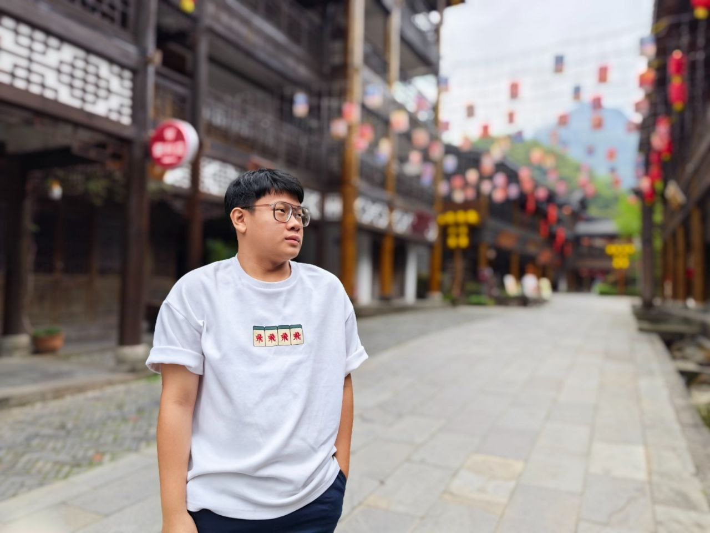

Hello! My name is Tan Yi Jun. I am a Digital Media Design student who is passionate about exploring the connection between art and technology. I love creating visual experiences through multimedia projects such as video editing, website design, motion graphics, and interactive storytelling. My goal is to design work that not only looks visually appealing but also communicates emotions and meaningful messages to the audience. In my free time, I enjoy sketching, learning new creative tools, and watching design documentaries to gain inspiration. I believe creativity is an endless journey, and each project I take helps me grow as both a designer and a storyteller.
